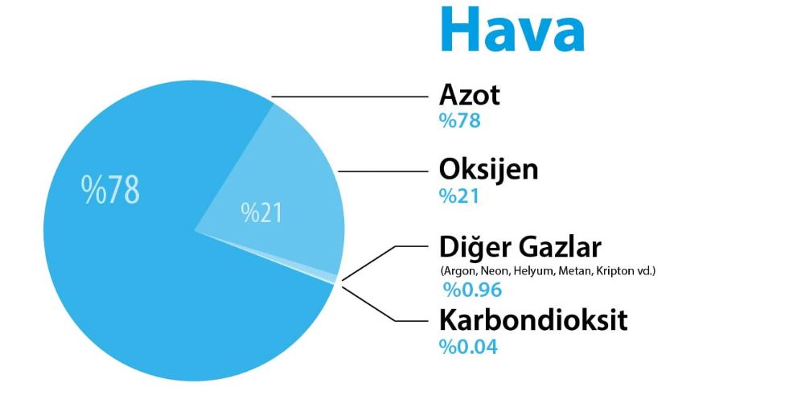

Bilim insanlarına göre atmosferin ağırlığı altında ezilmememizin sebebi, dışımızdaki hava içe doğru basınç uygularken vücudumuzda akciğer gibi hava dolu olan organlarımızın yanı sıra kan basıncının da dışa doğru bir basınç uygulaması.
“Hava” kelimesini duyduğumuzda aklımıza ne gelir? Yağmur, kar, dolu gibi hava olayları mı yoksa mevsimsel sıcaklıklar mı? Aklımıza ne gelirse gelsin çoğumuz havayı soyut bir kavram gibi düşünürüz. Fakat havanın da bir kütlesi var.
Atmosferi oluşturan gazların yani havanın %78’i azot, %21’i oksijendir. Geriye kalan %1’lik kısım ise argon, hidrojen, helyum, neon, metan, kripton, ksenon, karbondioksit ve ozon gibi gazlardan oluşur. Tüm bu gazların toplam kütlesi yaklaşık 5,1 katrilyon tondur (5,1×1018 kilogram). Bu da ortalama 5.100 kilogramlık 1.000.000.000.000.000 tane yetişkin Hint filinin kütlesi kadardır.
Dünya Bu Kadar Ağırlığı Nasıl Taşıyor?
Atmosferin ağırlığı yeryüzüne eşit olarak dağılır. Birim alana etki eden kuvveti ifade etmek için basınç terimi kullanılır. Deniz seviyesinde 0 °C sıcaklık altındaki açık hava basıncı “1 atmosfer” olarak tanımlanır.
Hava basıncı sebebiyle yeryüzündeki her bir 6,5 cm2lik alana etki eden kuvvet yaklaşık olarak 6,8 kilogram kütleli bir bovling topunun ağırlığına eşittir. Yani omzunuzda sadece 6,5 cm2lik bir alanda 6,8 kg’lık bir bovling topunun durduğunu hayal edebilirsiniz. Eğer hava sadece başımızın üzerinde olsaydı hiç kuşkusuz bu ağırlığın altında ezilirdik.
Ancak hava her yerdedir: başımızın üstünde, ayaklarımızın altında, kollarımızın ve bacaklarımızın etrafında ve hatta nefes aldığımız için vücudumuzun içinde. Bilim insanlarına göre atmosferin ağırlığı altında ezilmememizin sebebi, dışımızdaki hava içe doğru basınç uygularken vücudumuzda akciğer gibi hava dolu olan organlarımızın yanı sıra kan basıncının da dışa doğru bir basınç uygulaması.
kAYNAKLAR: Ayşenur Okatan · Images by Anadolu Ajansı